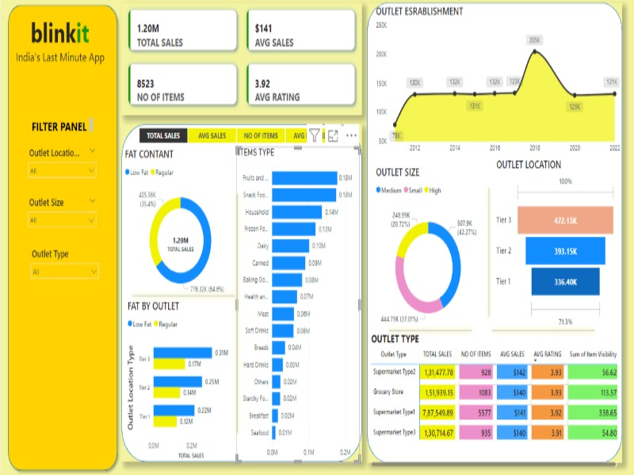
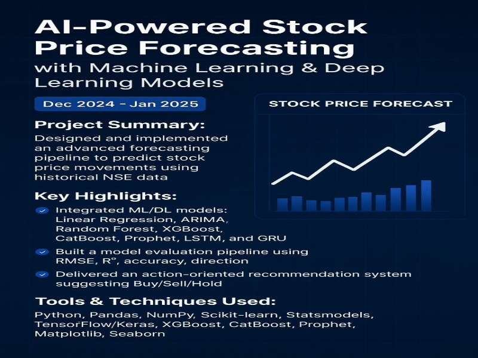
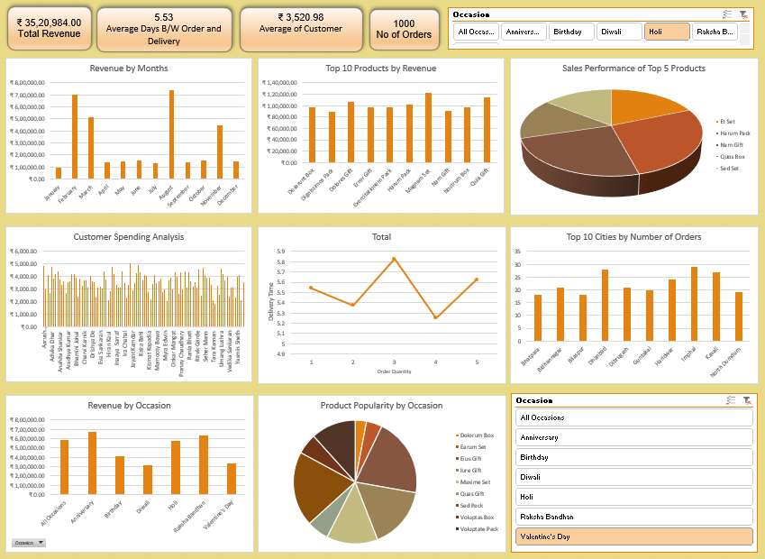

Turning Data into Actionable Insights
⬇ Download CVI’m a data-driven professional with a Master’s in Statistics from the University of Mysore, specializing in analytics, visualization, and machine learning. I build dashboards, predictive models, and business intelligence solutions for smarter, data-based decisions.
Working as an Analyst in the Marketing Analytics team, supporting data-driven decision making through campaign performance analysis, data validation, and reporting. Responsible for preparing analytical datasets for Marketing Mix Modeling (MMM), ensuring data quality, and collaborating with cross-functional teams to deliver accurate insights for clients.
Feb 2025 – Mar 2026
Started my career as a Process Executive at Infosys Limited, supporting banking operations for a leading US financial institution. Managed high-volume transactional data through validation, reconciliation, and exception analysis while ensuring data quality and SLA compliance. This role strengthened my analytical thinking, attention to detail, and problem-solving skills, providing a solid foundation for my transition into data analytics.
july 2024 – Jan 2025
Cleaned and analyzed large client datasets, built dashboards, and provided actionable recommendations using visualization tools and SQL-driven insights.

Theme: Sales performance and outlet-level business analysis.
Tools & Purpose: Power BI for interactive dashboards and KPI visualization,
Excel for data preparation and validation.
Highlights: Analyzed total sales, outlet size, item categories, and customer ratings.
Built dynamic dashboards with filters to compare performance across locations and outlet types.
Key Takeaways: Identified high-performing outlet categories, key sales drivers,
and areas with lower customer ratings impacting overall revenue.
Theme: Customer behavior and product performance analysis in e-commerce.
Tools & Purpose: SQL for querying, filtering, joining, and aggregating large
transactional datasets.
Highlights: Wrote complex SQL queries using joins, subqueries, and aggregations
to analyze customer purchases, top-selling products, and revenue trends.
Key Takeaways: Revealed repeat customer patterns, high-revenue products,
and opportunities for inventory and sales optimization.
Theme: Product and regional sales performance analysis.
Tools & Purpose: Python for data cleaning and analysis, Power BI for visual dashboards.
Highlights: Cleaned and analyzed mobile sales data to study brand-wise, region-wise,
and time-based sales performance. Built dashboards to visualize revenue distribution.
Key Takeaways: Identified top-performing brands and regions, uncovered sales gaps,
and supported data-driven promotional strategy decisions.

Theme: Time-series analysis and predictive modeling.
Tools & Purpose: Python for data preprocessing, analysis, and forecasting using
statistical and machine learning models.
Highlights: Analyzed historical stock data, applied models such as Linear Regression,
ARIMA, and LSTM, and evaluated performance using error metrics.
Key Takeaways: Demonstrated how historical price trends can be used to forecast
future movements and support data-driven investment decisions.
Theme: Customer satisfaction and service performance analysis.
Tools & Purpose: Python for analysis, Power BI for visualization.
Highlights: Analyzed ratings, delivery time, and restaurant performance
to understand factors influencing customer experience.
Key Takeaways: Identified drivers of customer satisfaction and provided
insights to improve service quality and repeat orders.

Theme: Sales performance analysis and demand forecasting.
Tools & Purpose: Excel for dashboards and KPI tracking, SQL for data extraction
and aggregation, Python for data cleaning, EDA, and basic forecasting.
Highlights: Cleaned and standardized raw sales data, analyzed product-wise
and monthly trends, and built Excel dashboards using pivot tables and charts.
Key Takeaways: Identified revenue-driving products, seasonal sales patterns,
underperforming items, and forecasted future demand to support planning decisions.